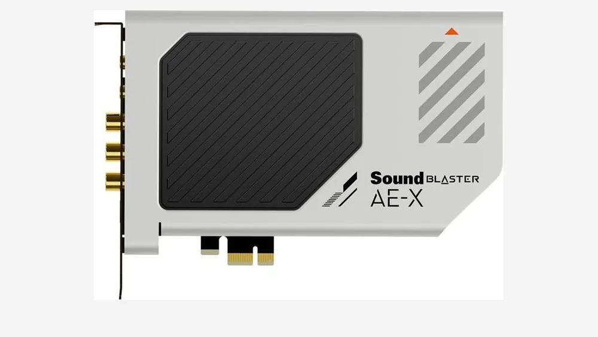

Audio output
| Period | Milestone | What happened |
|---|---|---|
| 1981 | The PC speaker | For most early IBM PC users the built-in speaker was the only way to make sound. It was limited to simple square waves, and the result was nicknamed the “beeper”[1]. |
| 1982 | Commodore 64 | It shipped with the SID chip, a three-voice synthesiser with filters and envelopes. |
| 1987 | AdLib | The card used a Yamaha FM synthesis chip (the OPL2) with nine programmable voices. Many games adopted it as their music standard. |
| 1989 | Sound Blaster | It was AdLib-compatible and added an 8-bit DAC, a converter that turns digital samples into an analog signal. Games could now play recorded sound effects. |
| 1990s | Wavetable and 16-bit sound | Wavetable synthesis plays back recorded instrument samples instead of generating tones. Cards like the Gravis Ultrasound (1992) used it, and later Sound Blasters offered 16-bit stereo audio. |
| 2001 | 3D audio | Standards such as Environmental Audio Extensions added hardware-accelerated 3D positional sound, the basis of today’s spatial audio in games, cinema and VR. |



Audio input
A microphone converts sound into an electrical signal, and a sound card digitises it with an analog-to-digital converter. Modern devices use several microphones together and a technique called beamforming: by combining the signals, the array focuses on sound coming from one direction and suppresses sounds from others. Digital signal processing (DSP) then removes echo, background noise and reverberation, so a smart speaker can hear a voice from across the room [2].